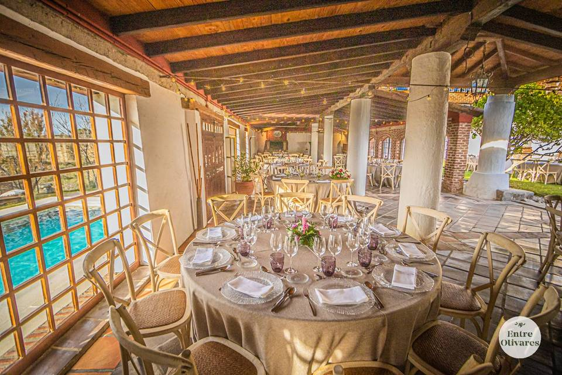
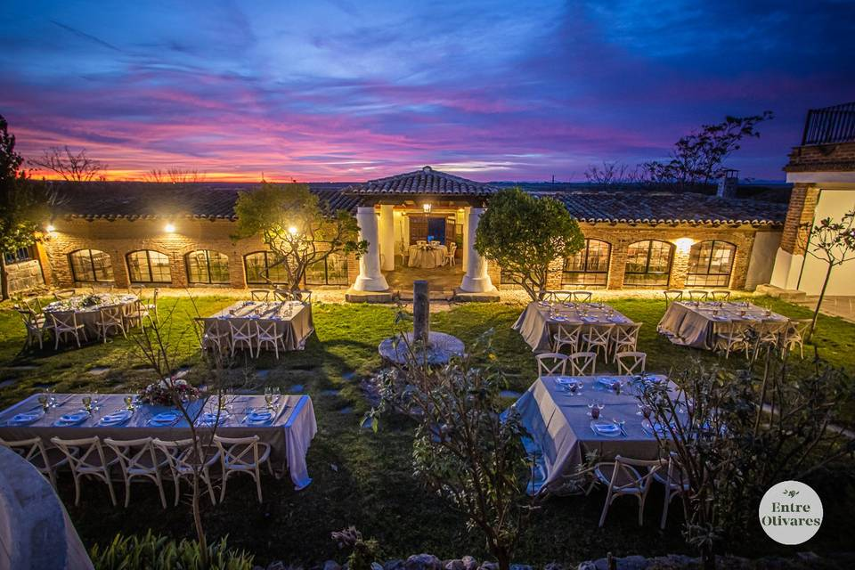
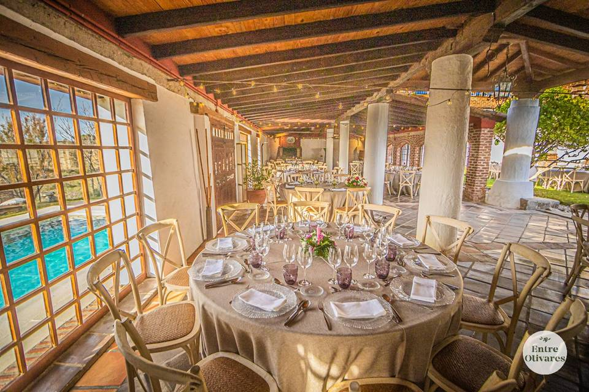
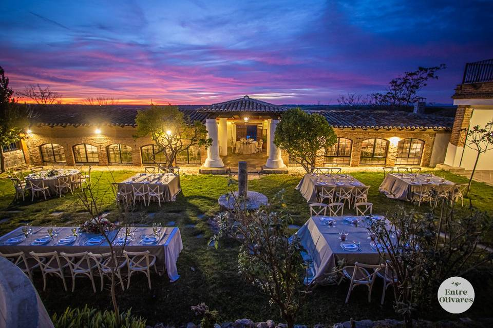
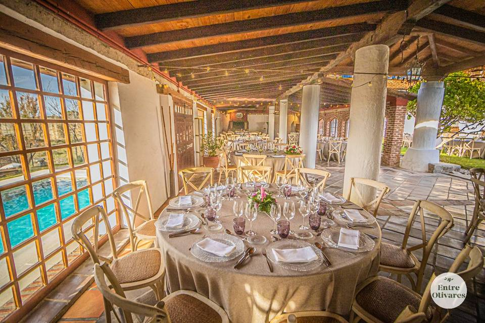
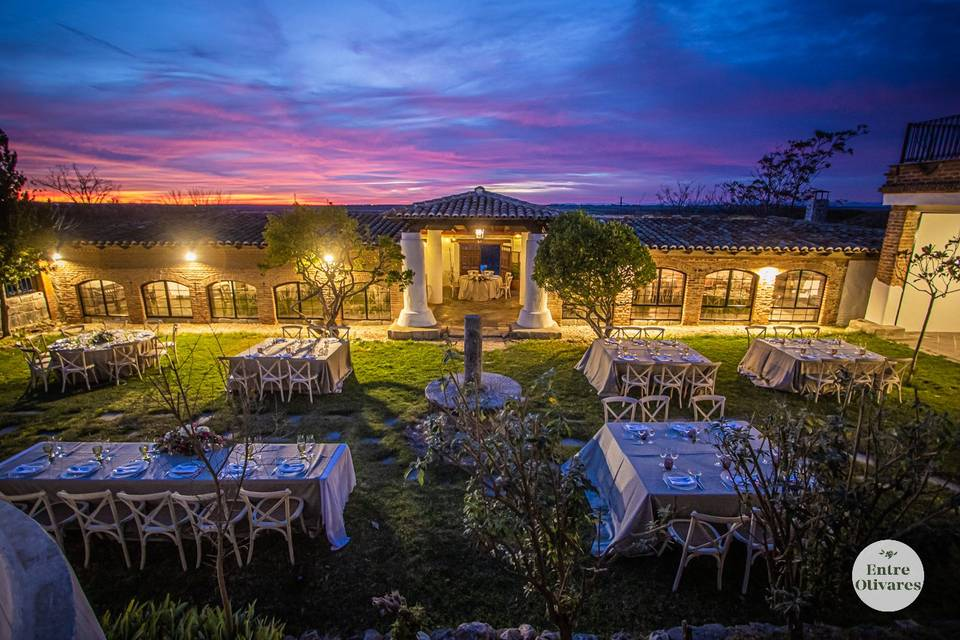

Si no quieres jugártela después del fiestón que nos vamos a pegar, aquí te dejamos la dirección de dos hoteles más cercanos a la finca. Escríbenos un whatsapp cuanto antes para intentar que nos hagan precio como grupo.
Hotel la Roda: Plaza Miguel de Cervantes, 6, Villaluenga, 45520, España.
Carlos I de Toledo: Carlos I, 51, Yucos, 45210, España
UBICACIÓN GOOGLE MAPS: https://maps.app.goo.gl/VxpcQ2HdYCE8kfYaA
También se puede buscar directamente en Google Maps como: FINCA ENTREOLIVARES RECAS (TOLEDO).
Pedid ubicación hasta Recas, plaza España. Cuando estéis en la plaza, pedid la ubicación a la finca.
Hacedlo por ese orden. No pidáis la ubicación a la finca directamente desde vuestra casa.
No pidáis la ubicación a la finca directamente desde vuestra casa.
Utilizad solo Google Maps. No usar Waze!!
Cuando lleguéis a la entrada del camino que lleva a la casa, veréis una barrera automática.
Llamad al número 636 72 32 27 para que os abran la barrera.

